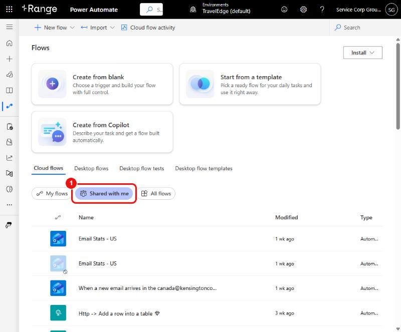
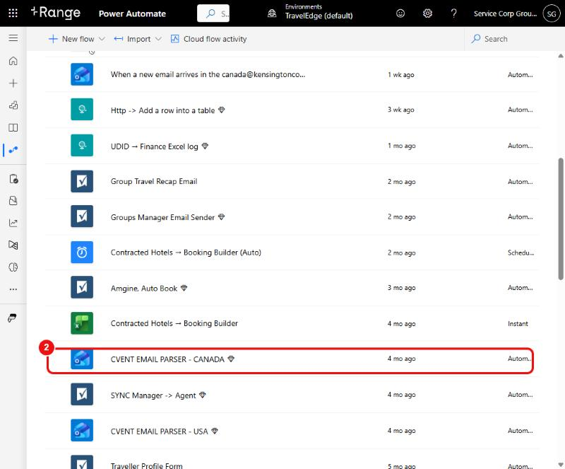
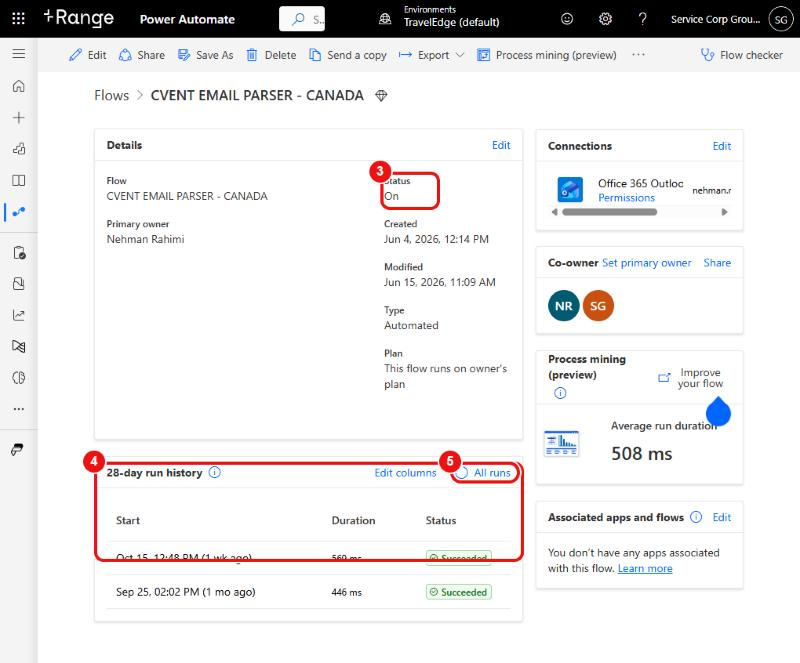
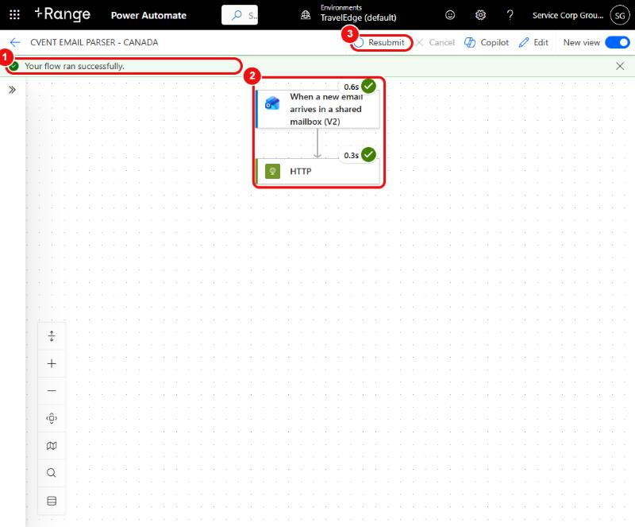
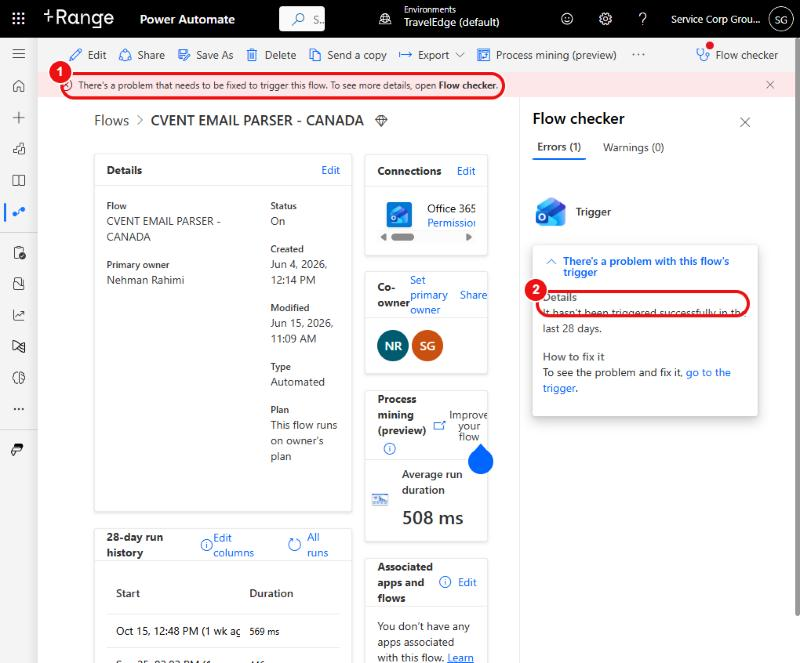
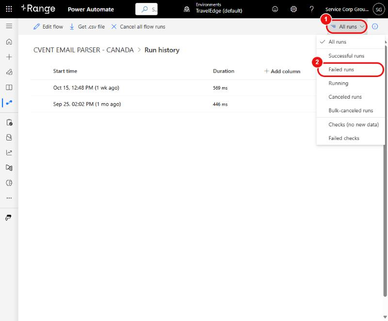

Power Automate How-To
Kensington group & traveller automations — how to check them, and what to do when one breaks. Red circles and numbers in the screenshots show where to click.
service.corp.groups@kensingtoncorporate.com) is stored in Sabre — it is not written on this page. Don’t edit or delete a flow unless a step below tells you to. Looking around is always safe.Jump to: 1 Sign in2 Find a flow3 Is it on?4 Did it run?5 Failed runsIf the CVENT parser breaksFlow listCommon fixesHandover risks
1Sign in
- Go to make.powerautomate.com and sign in with the shared account (details in Sabre).
- Check the top bar says Environments → TravelEdge (default). All of our flows live in that environment. If it shows another environment, click it and switch.
1Find a flow → 2Open it
In the left menu click My flows, then open the Shared with me tab (circle 1). Every flow Nehman owns is shared with the shared account, so they all appear here (16 at the time of writing).

Scroll the list and click the flow’s name (circle 2). Tip: on the list, a greyed-out icon with a small “no entry” sign means the flow is switched off.

3Is the flow turned on?
The flow’s page shows Status (circle 3) — it should say On. Below it is the 28-day run history (circle 4): every time the flow ran, with a green Succeeded or red Failed. All runs (circle 5) opens the full list.

4Did it actually run? (“click here to see if it ran”)
In the run history, click the most recent date. A green bar says “Your flow ran successfully” (circle 1) and every step shows a green tick (circle 2). Resubmit (circle 3) re-runs that same email/event again.


5Find and re-run failed runs
- On the flow’s page click All runs.
- Top right, click the All runs filter (circle 1) and choose Failed runs (circle 2).
- Click a failed run. The step with a red cross is what broke — click it to see the error message.
- Fix the cause if you can (see Common fixes), then click Resubmit at the top of that run. For the CVENT parsers it is safe to resubmit: the parser skips people it has already saved, so nobody is doubled up.

If the CVENT email parser breaks (step by step)
There are two flows: CVENT EMAIL PARSER - CANADA and CVENT EMAIL PARSER - USA. Each one does the same two things: (1) when a new email arrives in its shared mailbox, (2) an HTTP step sends that email to our parser website, which saves the traveller to the CVENT log, the Envoy traveller master sheet and the agent copy. Signs it has broken: a registration email arrived but the traveller isn’t on the Envoy master sheet, or Vera/the team report missing registrations.
A. Check the flow is on and has been running
- Sign in (step 1) → My flows → Shared with me → open the CVENT flow for that region (steps 1–2).
- Check Status = On. If it says Off, click Turn on in the toolbar.
- Look at the 28-day run history. Compare it with when the missing email arrived: is there a run at that time?
B. Work out what kind of problem it is
| What the run history shows | What it means | What to do |
|---|---|---|
| No run at the time the email arrived | The flow never saw the email: it was off, the mailbox connection expired, or the email went to a different folder/mailbox. | Make sure it’s On; open Connections on the flow page and fix any warning (sign in again); confirm the email really is in the shared mailbox the flow watches (Canada / USA). If the connection belongs to Nehman’s account, he (or the new owner) has to re-sign it. Then wait for the next email; Power Automate can’t re-read an email it missed. |
| Run Succeeded but traveller is not on the sheet | The flow did its job; the parser website decided to skip it or wrote it somewhere else. | Open the run, click the HTTP step and read the response (see C). The parser skips emails that don’t look like registrations, and skips people it has already saved (duplicates). Search the CVENT log and the master by the person’s email address. They may already be there. |
| Run Failed at the first step (mailbox trigger) | Connection or mailbox access problem. | Fix the connection under Connections; if it says no access to the shared mailbox, ask IT for Full Access for the account the connection uses. |
| Run Failed at the HTTP step | The parser website returned an error (or was unreachable). | See C and D below. |
C. Read what the parser said
- Click the run (step 4). Every step shows a green tick or a red cross.
- Click the HTTP step to expand it. Under Outputs you’ll see a Status code and a Body.
- Status 200: the parser answered. Inside the body,
should_process=falsemeans it decided the email isn’t a registration;smartsheet_writeshows what happened for each sheet (any error, e.g.INVALID_COLUMN_ID, is listed there). - Status 404 / 5xx / timeout: the parser website itself is down (go to D).
D. Check the parser website is alive
- Open kensington-group-form.vercel.app/api/parse-email in a browser tab. An error page saying “Unsupported method (GET)” (code 501) is good (it’s alive, it just doesn’t accept a plain page visit). A 404 means the parser file is missing from the website. Tell Nehman / the developer; this happened before (Oct 7) when the file was deleted by accident.
- Code problems (a field blank/wrong, an email being ignored, a sheet column renamed) are fixed in the Email Parser Portal. It has a How-To for each symptom.
E. Re-run the emails that were missed
- After the cause is fixed, go to the flow → All runs → filter Failed runs (step 5).
- Open each failed run since the problem started (oldest first) and click Resubmit. It is safe: the parser skips anyone it has already saved, so nobody is doubled up.
- If there are no failed runs but emails were missed (the flow was off), Power Automate can’t replay them: use the original email and re-send it to the shared mailbox, or add the traveller by hand.
- Check the result: search the Envoy traveller master sheet by the person’s email. The new row should have Source = CVENT. If the Group ID wasn’t in the email, fill it in by hand.
What each flow does
Plain-language summary based on the flow names and how our website uses them — open the flow and read its steps (top to bottom) to confirm before relying on a description.
| Flow | What it does | If it’s not working |
|---|---|---|
| CVENT EMAIL PARSER - CANADA / - USA | When a CVENT/Swoogo registration email lands in the shared mailbox, sends it to our parser (/api/parse-email) which writes the traveller to the sheets. | Check Status = On, then the latest run: both steps (mailbox trigger + HTTP) should be green. Travellers missing from the Envoy master sheet? Resubmit failed runs; for code problems use the Email Parser Portal. |
| Amgine, Auto Book | When the “Book” checkbox is ticked on a traveller row in Smartsheet, triggers the booking in Amgine. | Check it’s On and the last run is green. The booking logic itself is in the Amgine Portal. |
| Group Travel Recap Email | Emails the person who submitted the Group Travel Request a copy when they tick “send me a copy”. | Check On + latest run. The new-request alert to corp.groups is sent by the form itself, not by this flow. |
| Groups Manager Email Sender | Sends group-manager emails from Smartsheet rows. | Check On + latest run for a red step. |
| Traveller Profile Form | Sends the Passenger Profile copy email when “send me a copy” is ticked. | Check On + latest run. |
| UDID → Finance Excel log Http → Add a row into a table | Receive data from our website (UDID / Go-Live forms) and add a row to the finance Excel table. | These are triggered by a web address. Never export/re-import them — the address would change and the forms would stop working. |
| SYNC Manager → Agent | Keeps the manager and agent group sheets in sync. | Check On + latest run. |
| Contracted Hotels → Booking Builder (and “(Auto)”) | Builds hotel booking rows from the contracted-hotels Excel. “(Auto)” runs on a schedule. | Check On, and for the scheduled one check it has run in the last day. |
| Email Stats - US and the canada@ COMPLETED EMAILS flow | Log received emails (date, subject, category, queue) into an Excel table for stats. | One “Email Stats - US” copy is switched off (greyed) — that is expected. |
| When a new row is created → … (2 flows) | Smartsheet row-created triggers that read sheet data and branch on a condition. | Open them to see exactly which sheet they watch before changing anything. |
Common problems and fixes
| What you see | What to do |
|---|---|
| Status says Off | Open the flow → Turn on. (Smartsheet or Outlook triggers sometimes get switched off after repeated failures.) |
| A run Failed at the first step (mailbox / Smartsheet trigger or action) | Usually the connection expired. On the flow page, under Connections, click the warning/Fix link and sign in again. If it is the owner’s connection, Nehman (or the new owner) must do it. |
| A run Failed at the HTTP step | Our website/parser returned an error. Open the run → HTTP step → read the response. Try Resubmit once; if it fails again the code needs fixing (use the portals). |
| Emails arrive but no run appears | The flow is off, or can’t read the mailbox. Confirm the shared account can open the shared mailbox (Canada / USA) in Outlook; if not, ask IT for Full Access to that mailbox. |
| “Premium”/licence error | Flows using the HTTP step need a Premium licence on the flow owner. Ask IT to assign/renew it before removing it from anyone. |
| Everything fails at once | Check whether the Smartsheet API token was regenerated (the website needs it updated in Vercel), and whether the owner’s password was changed (connections then need re-signing-in). |
Handover risks (read once)
- Flows run on the original owner’s connections. The flows are co-owned by the shared account, but connections such as Office 365 Outlook were created with Nehman’s sign-in (visible in the Connections box). If Nehman’s account is disabled, those flows will fail until someone re-signs the connections with an account that will stay.
- Never “export and import” a flow to move it — web-triggered flows get a new address and the forms break.
- Premium licence sits with the owner. Move it deliberately (add first, remove after).
- When in doubt, ask before editing. Every flow can be turned off/on safely; deleting is not reversible.
Last updated 2026-10-27 · Related: Forms Portal · Email Parser Portal · Amgine Portal